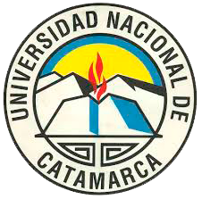

Web Full Stack Jr
Periodo: Enero 2022 - Enero 2023
Institucion: Argentina Programa - Ministerio de Desarrollo Productivo.

Tecnicatura en Informática con Orientación en Redes
Periodo: Enero 2007 - Diciembre 2011
Institucion: Universidad Nacional de Catamarca.
Tecnicatura en Informática con Orientación en Mantenimiento
Periodo: Enero 2007 - Diciembre 2011
Institucion: Universidad Nacional de Catamarca.